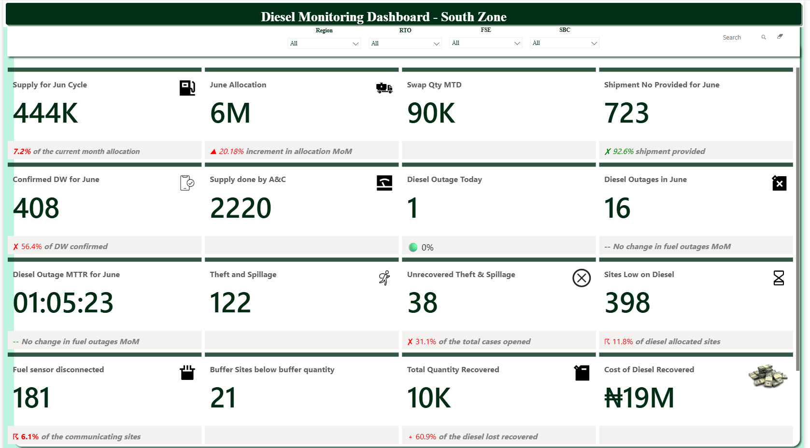

Diesel Monitoring Dashboard
Real-time dashboard tracking 444K liters of diesel supply, 408 confirmed Digital Waybills, and ₦19M recovered from theft. Built with Power BI to help operations teams reduce fuel loss and optimize logistics across the Zone.
View project →